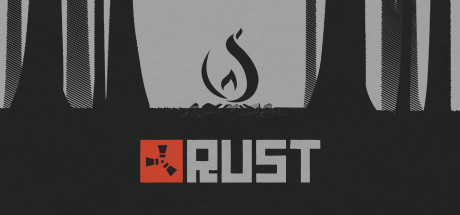

|
|
Counter-Strike: Global Offensive (abbreviated as CS:GO) is a multiplayer first-person shooter video game developed by Hidden Path Entertainment and Valve Corporation.
The game pits two teams against each other: the Terrorists and the Counter-Terrorists. Both sides are tasked with eliminating the other while also completing separate objectives, the Terrorists, depending on the gamemode, must either plant the bomb or defend the hostages, while the Counter-Terrorists must prevent the bomb from being planted or to rescue the hostages.
There are six gamemodes, all of which have distinct characteristics specific to that mode.
Global Offensive has matchmaking support that allows players to play on dedicated Valve servers, as well as allowing custom maps and gamemodes via community servers.
Global Offensive has a competitive scene, with Valve-sponsored tournaments, known as the "Majors", being the premier competitive event for the game.
|
|

|
Rust is a multiplayer-only survival video game in development by Facepunch Studios for Microsoft Windows, OS X, and Linux. Rust was originally released onto Steam's Early Access program on 11 December 2013.
Rust was initially created as a clone of DayZ, a popular mod for ARMA 2 with the addition of crafting elements.
The game tasks players to survive in the wilderness by crafting items using the materials they gather or steal; the player starts with only a rock and a torch. There is only a multiplayer mode and a prevalent concept in Rust is to form and join clans with other players.
Raiding is a very common action, usually done in large clans. Since Rust's first alpha launch, animals, hunting and the ability to craft armor and weapons have been added.
It initially featured zombies as enemies, but subsequently replaced them with bears and wolves. Radiation was also removed due to the frustration it was causing players, although it was later reintroduced.
|

|
Fallout 4 is an action role-playing video game developed by Bethesda Game Studios and published by Bethesda Softworks for Microsoft Windows, PlayStation 4, and Xbox One.
Released worldwide on November 10, 2015, it is the fifth major installment in the Fallout series. The game is set within an open world post-apocalyptic environment that encompasses the city of Boston and the surrounding Massachusetts region known as "The Commonwealth".
The main story takes place in the year 2287, ten years after the events of Fallout 3 and 210 years after "The Great War" that caused catastrophic nuclear devastation across the United States.
The player assumes control of a character referred to as the "Sole Survivor" who emerges from a long-term cryogenic stasis in Vault 111, an underground nuclear fallout shelter, after witnessing the murder of their spouse and kidnapping of their only child, and ventures out into the Commonwealth to search for their missing child.
The player will subsequently explore the game's dilapidated world, complete various quests, help out factions, and acquire experience points to level up and increase the abilities of their character.
New features to the series include the ability to develop and manage settlements, and an extensive crafting system where materials scavenged from the environment can be used to craft drugs and explosives, upgrade weapons and armor, and construct, furnish and improve settlements.
Fallout 4 also marks the first game in the series to feature full voice acting for the protagonist.
|